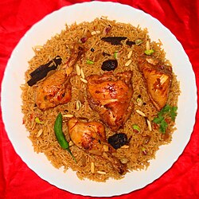

Home
Kabsa

Description
Kabsa also known as Makboos or Machboos, is an Arab mixed rice dish that originates from Saudi Arabia or Yemen. It is commonly regarded as a national dish in all the countries of the Gulf Cooperation Council. It can also be found in regions such as southern Iran and Gaza in Palestine.
Ingredients
- 2kg Meat or chicken
- 1kg Rice
- 1/2kg Red onion
- 3 Tomatoes
- Tomato paste
- Leaves
- Kabsa spices
- 2 Green pepper
Steps
- Cook the chopped onions in low teprature
- Add the meat or the chicken
- Add the tomatoes and Kabsa spices
- Add the tomato paste and the leavess and the green peppers
- Add water so that it soakes the whole thing
- Let it be slow-cooked for 1 hour
- After the chicken has been well cooked, add the washed rice to the whole thing
- Mix and cook until everything is cooked well
- Bon Appetite :)